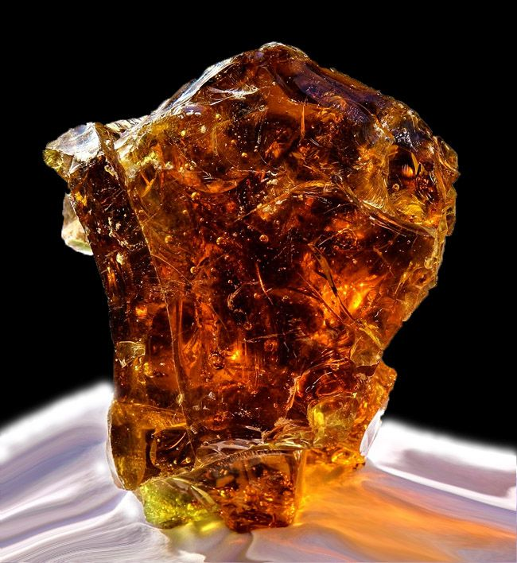

Жовтий колір в інтер'єрі стимулює розумову діяльність, покращує настрій, додає енергії, оптимізму та тепла, нагадуючи сонячне світло. Він найкраще підходить для кухонь, віталень та робочих зон, оскільки сприяє концентрації, творчості та спілкуванню. Однак його надлишок може викликати роздратування або втому.
Світло-жовтий, який ще називають лимонним, а також усі кремові відтінки – це чисті, ясні, освітлювальні кольори. Їх найкраще використовувати в їдальні, вітальні та спальні. Вони красиво поєднуються з сучасними меблями зі скла та металу. Цікавим та оригінальним доповненням до таких меблів стануть різноманітні плюшеві та флісові аксесуари у вигляді м'яких подушок.

Жовтий чудово освітляє приміщення, він стане в пригоді у кімнатах з невеликою кількістю денного світла, що виходять на північ і схід. На великих поверхнях краще використовувати пастельні відтінки, занадто насичений колір може викликати роздратування. Жовті стіни створюють яскраве тло та красиву основу для картин і декоративних, візерунчастих тканин у насичених відтінках.

Теплий жовтий у своєму насиченому відтінку нагадує бурштин. Він надає приміщенню прозорого, злегка золотавого характеру, або ж відчуття тепла, яке ідеально підходить до ванної кімнати. Його можна також використовувати на кухні, у вітальні та спальні. Це колір, що належить до традиційної, найдавнішої декоративної палітри. Такий інтер’єр, доповнений класичними меблями, набуває вишуканості і глибини. Теплий жовтий тон має чудовий вигляд у поєднанні з важкими, темними шторами.